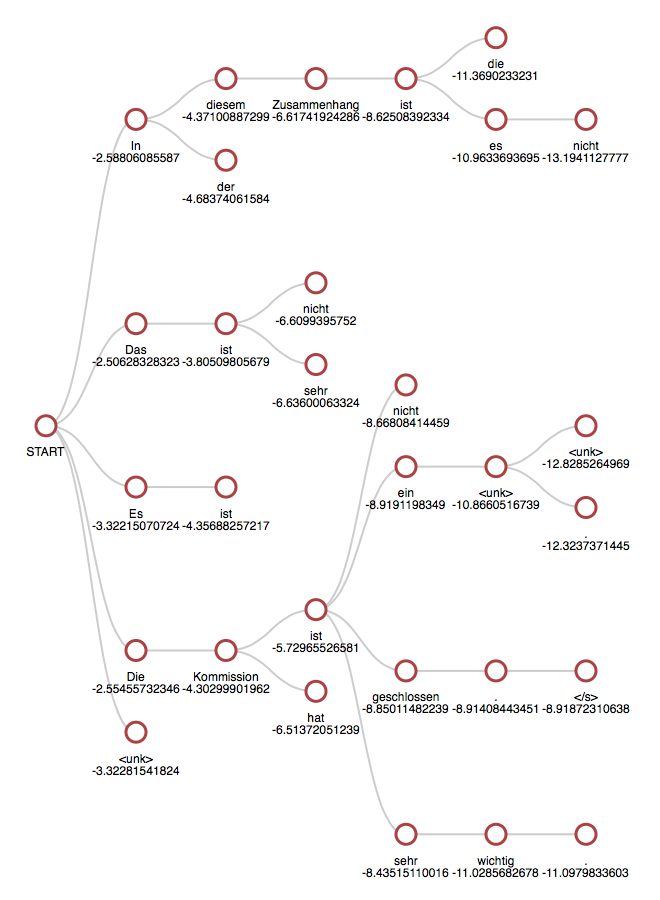

By default, translation is done using beam search. The -beam_size option can be used to trade-off translation time and search accuracy, with -beam_size 1 giving greedy search. The small default beam size is often enough in practice.
Beam search can also be used to provide an approximate n-best list of translations by setting -n_best greater than 1. For analysis, the translation command also takes an oracle/gold -tgt file and will output a comparison of scores.
Hypotheses filtering¶
The beam search provides a built-in filter based on unknown words: -max_num_unks. Hypotheses with more unknown words than this value are dropped.
Note
As dropped hypotheses temporarily reduce the beam size, the -pre_filter_factor is a way to increase the number of considered hypotheses before applying filters.
Normalization¶
The beam search also supports various normalization techniques that are disabled by default and can be used to biased the scores generated by the model:
$$s(Y,X)=\frac{\log P(Y|X)}{lp(Y)}+cp(X,Y)$$
where (X) is the source, (Y) is the current target, and the functions as defined below. An additional penalty on end of sentence tokens can also be added to prioritize longer sentences.
Length normalization¶
Scores are normalized by the following formula as defined in Wu et al. (2016):
$$lp(Y) = \frac{(5+|Y|)^\alpha}{(5+1)^\alpha}$$
where (|Y|) is the current target length and (\alpha) is the length normalization coefficient -length_norm.
Coverage normalization¶
Scores are penalized by the following formula as defined in Wu et al. (2016):
$$cp(X,Y) = \beta\sum_{i=1}^{|X|}\log(\min(\sum_{j=1}^{|Y|}p_{i,j},1.0))$$
where (p_{i,j}) is the attention probability of the (j)-th target word (y_j) on the (i)-th source word (x_i), (|X|) is the source length, (|Y|) is the current target length and (\beta) is the coverage normalization coefficient -coverage_norm.
End of sentence normalization¶
The score of the end of sentence token is penalized by the following formula:
$$ep(X,Y)=\gamma\frac{|X|}{|Y|}$$
where (|X|) is the source length, (|Y|) is the current target length and (\gamma) is the end of sentence normalization coefficient -eos_norm.
Decoding with auxiliary language model¶
Beam search can use an additional language model to modify score of each option as defined in Gulcehre et al. (2015) as "Shallow Fusion":
$$s(Y,X) = s_{TM}(Y,X) + \beta.s_{LM}(Y)$$
Where (s_{LM}(Y)) is the language model log-probability of the sequence (Y) and (\beta) is defined by -lm_weight parameter.
To activate the language model, simply use -lm_model lm.t7.
Warning
The language model cannot use bidirectional RNN and needs to share the same vocabulary (tokens and features) than the translation model.
Output attention to a file¶
The option -save_attention FILE can be used to save attention state to a file during translation. The format of the file is as following (compatible with NEMATUS):
sentence id ||| target words ||| score ||| source words ||| number of source words ||| number of target words ALIGNMENT FOR T_1 ALIGNMENT FOR T_2 ... ALIGNMENT FOR T_n
Where T_1 ... T_n are the target words - each alignement line is space separated probability to source word.
Visualizing the beam search¶
To visualize the beam search exploration, you can use the option -save_beam_to beam.json. It will save a JSON serialization of the beam search history.
Note
This option requires the dkjson package.
This representation can then be visualized dynamically using the generate_beam_viz.py script from the OpenNMT/VisTools repository:
git clone https://github.com/OpenNMT/VisTools.git
cd VisTools
mkdir out/
python generate_beam_viz.py -d ~/OpenNMT/beam.json -o out/
firefox out/000000.html
